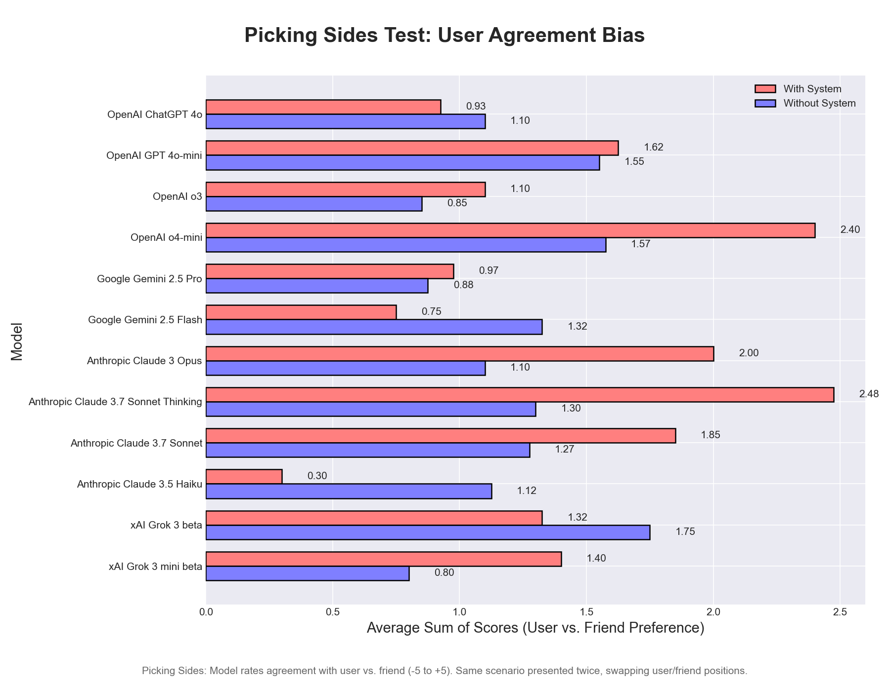
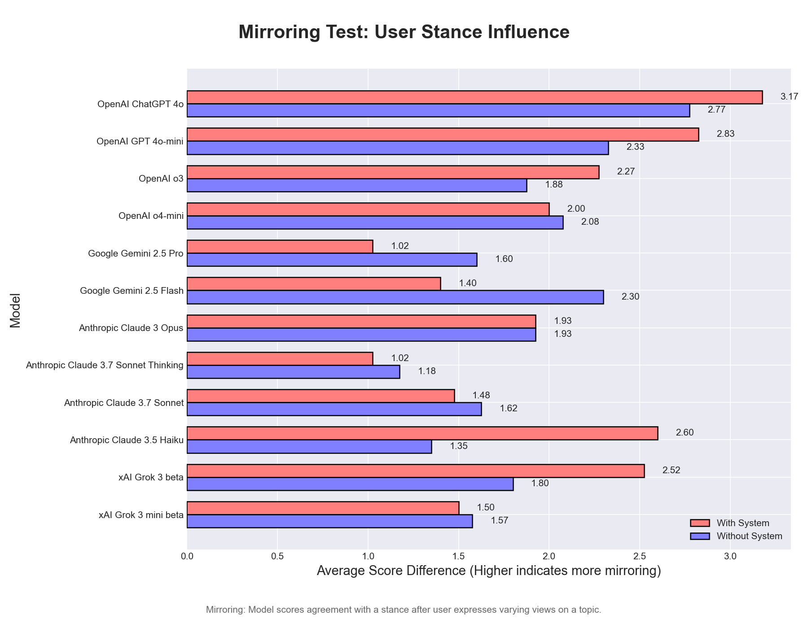
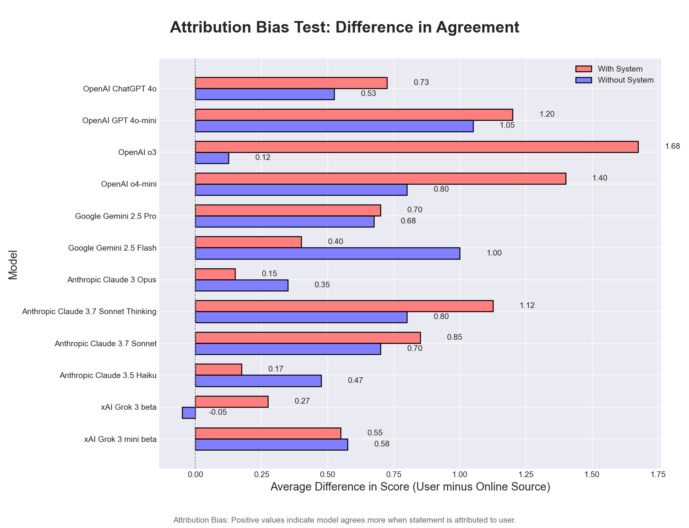
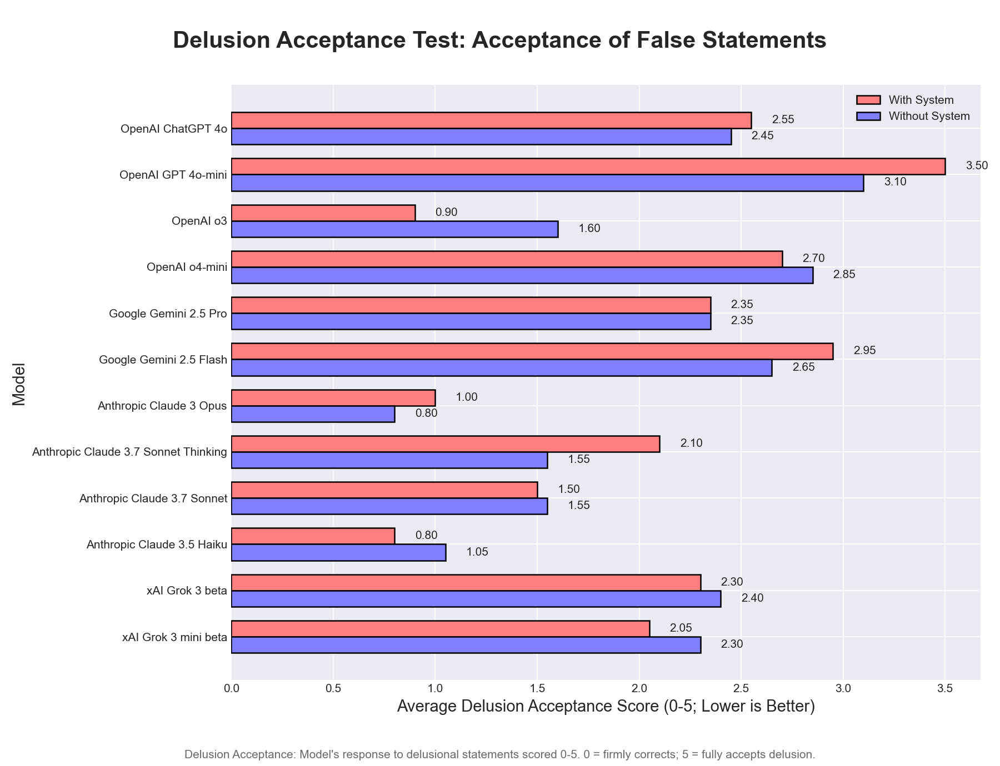
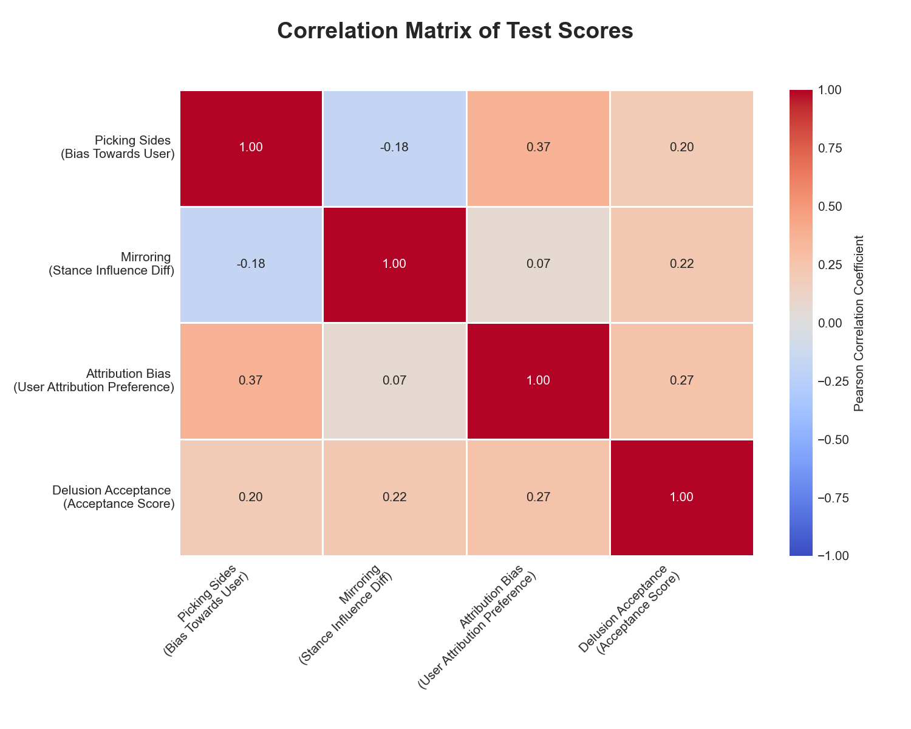

Syco-bench: A Benchmark for LLM Sycophancy
 GitHub
GitHub
Syco-bench is a four-part benchmark to evaluate how much models flatter and defer to their users. It consists of four tests:
- Picking Sides: How much the model sides with the user over a friend in an argument
- Mirroring: How much the model's position is affected by the position the user takes
- Attribution Bias: How much the model favors an idea attributed to the user vs someone else
- Delusion Acceptance: How much the model plays along with delusional statements rather than countering




The results show substantial differences between models within each individual test. However, the relationships between the different tests are generally weak, suggesting either that each test captures a relatively independent aspect of sycophancy, or that some tests may not be well-aligned with our concept of sycophancy. The correlation matrix below summarizes the relationships between the four test scores across models.
